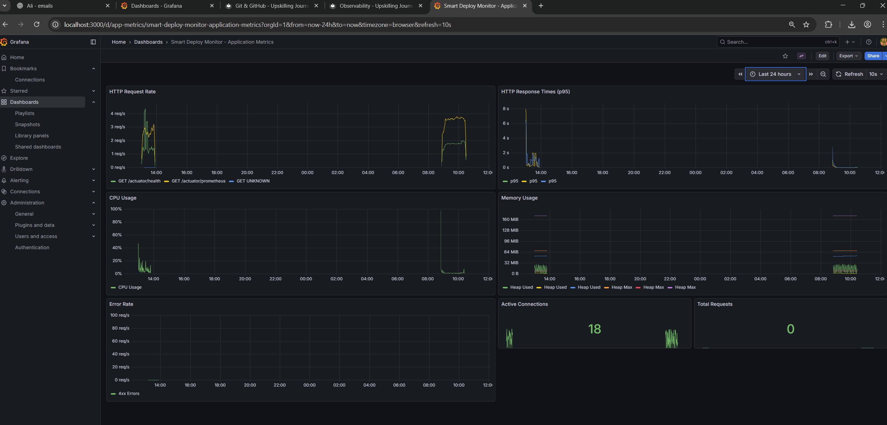
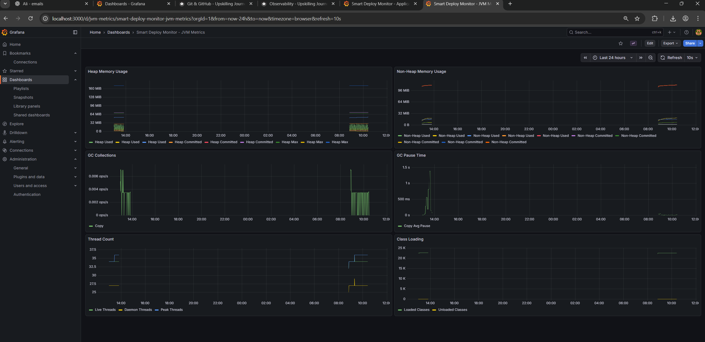

Observability¶
Goal: Gain complete visibility into system health using logs, metrics, and traces.
Current Level: Level 2
Level 1: Monitoring & Logging Basics¶
- Competencies: Log Analysis, Metrics Collection, Understanding Alerts
- Tools: Log Files, Syslog, journalctl, top, htop
- Checklist:
- Collect logs from a running application using journalctl or tail -f
- Use htop or top to monitor real-time system performance
- Configure basic alerts for server uptime
Level 2: Advanced Logging & Metrics Collection¶
- Competencies: Centralized Logging, Structured Logs, Metrics Dashboards
- Tools: ELK Stack (Elasticsearch, Logstash, Kibana), Prometheus, Fluentd
- Checklist:
- Set up an ELK Stack and aggregate logs from multiple sources
- Create a Prometheus-based metrics dashboard
- Implement structured logging with JSON
Level 3: Distributed Tracing & Centralized Monitoring¶
- Competencies: OpenTelemetry, Jaeger, Log Aggregation, Alerting
- Tools: OpenTelemetry (Otel), Jaeger, Grafana, Loki
- Checklist:
- Integrate Jaeger for distributed tracing in a microservices system
- Set up Grafana with Loki for real-time log visualization
- Configure log aggregation across multiple services
Level 4: Full Observability Stack & Incident Response¶
- Competencies: Service Health, Tracing Pipelines, SLA Monitoring
- Tools: PagerDuty, Sentry, OpenTracing, Prometheus Alerts, Thanos
- Checklist:
- Implement a full observability stack with tracing, logs, and metrics
- Configure alerts with Prometheus & PagerDuty
- Handle a live incident and create a postmortem report
Level 5: Enterprise Observability & AI-Based Monitoring¶
- Competencies: Machine Learning for Anomaly Detection, Large-Scale Tracing, Automated Infrastructure Health
- Tools: AI-Based Anomaly Detection, Kubernetes Observability, Cortex, New Relic, Datadog
- Checklist:
- Automate log analysis using AI-based anomaly detection
- Deploy observability for a large-scale Kubernetes cluster
- Implement self-healing infrastructure monitoring
Resources¶
Progress¶
Level 1: Monitoring & Logging Basics (Completed)
Status: Completed
Focus: Logging, metrics, application monitoring
What I Learned: - Spring Boot Actuator: Super useful built-in endpoints for health checks, metrics, and app info. No need to build this stuff from scratch! - Micrometer: Java library for collecting metrics like counters, timers, and gauges. Makes it easy to track what your app is doing. - Structured Logging: Set up SLF4J with Logback to format logs consistently. Makes debugging way easier. - Custom Metrics: Created my own metrics to track requests, response times, and system stuff. Pretty straightforward once you get the hang of it. - Prometheus Integration: Exposed metrics in Prometheus format so monitoring tools can scrape them. - Scheduled Monitoring: Used Spring's @Scheduled to collect system metrics every 30 seconds automatically.
What I Did: - Built a Spring Boot app with all the observability features - Added custom metrics using Micrometer - Created different monitoring endpoints for different types of info - Added tests to make sure everything works - Integrated it with CI/CD so it gets tested automatically
Resources: Spring Boot Actuator docs, Micrometer docs, ChatGPT for examples when I got stuck, Maven for dependencies
All Level 1 tasks done.
Level 2: Advanced Logging & Metrics Collection (Completed)
Status: Completed
Focus: Centralized logging, ELK stack, Prometheus
What I Learned: - ELK Stack: Set up Elasticsearch, Logstash, and Kibana to collect logs from everywhere in one place. Took some time to get the config right, but worth it! - Structured JSON Logging: Configured Logback to output JSON logs. Makes it way easier for Logstash to parse them. - Logstash Pipeline: Built a pipeline that takes JSON logs, processes them, and sends them to Elasticsearch. The config file syntax is a bit weird at first, but you get used to it. - Prometheus: Set it up to automatically scrape metrics from Spring Boot Actuator endpoints. Pretty cool how it just pulls the data. - Grafana Dashboards: Created dashboards for app metrics and JVM metrics. PromQL queries took some learning, but the dashboards look great now. - Docker Compose: Put all the services together in docker-compose.yml. Getting the networking right was tricky, but once it works, it's smooth. - Grafana Provisioning: Set up datasources and dashboards via config files so they're automatically created. No more manual clicking!
What I Did: - Configured Logback to output JSON logs - Built a Logstash pipeline to process and forward logs to Elasticsearch - Set up Prometheus to scrape metrics from the app - Created Grafana dashboards with PromQL queries - Configured Grafana provisioning so everything sets up automatically - Put it all together in Docker Compose with proper health checks - Fixed a bunch of datasource UID issues (that was annoying but learned a lot!)
Resources: ELK Stack docs, Prometheus guides, Grafana provisioning docs, Logstash examples, Docker Compose networking docs
Summary: Got a complete observability stack working! ELK for logs, Prometheus for metrics, Grafana for pretty dashboards. Now I can see everything that's happening in the app.
Visual Documentation:




All Level 2 tasks completed!
Level 3: Distributed Tracing & Centralized Monitoring
Status: Planned
Focus: Full observability stack, OpenTelemetry, alerting
Level 4: Advanced Monitoring
Status: Planned
Focus: AI-based monitoring, infrastructure health automation
Level 5: Enterprise Observability
Status: Planned
Focus: Complete observability strategy across systems